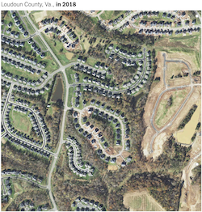

Quick search
Table of Contents
Syllabus
Introduction to GIS
.md
.pdf
PBPL010 Introduction to Geographic Information Systems
¶
Syllabus
Description
Course Objectives
Computational Learning
Course Structure
Grading
Exercises
Exam
Collaboration
Review Questions
Project
Schedule (Planned)
Code of Conduct
Introduction to GIS
Overview
Spatial Thinking
Origins
Early Spatial Analysis
Modern (lack of) Spatial Thinking
Modern Spatial Thinking
GIS
Geographic Information Systems
Geographic Information Services
Geographic Information Science
GIS and Public Policy
Why GIS and Public Policy?
Positive Applications of GIS in Public Policy
GIS based policy analysis
Environmental Disparities and Equity Analysis
Spatial Criminology
Neighborhood Change
Segregation
GIS derived measures
Food Deserts
Accessibility to Parks
Detecting Land Use Change
Normative Applications of GIS
School Redistricting
Transportation Planning
Geographical Targeting
PBPL010 Introduction to Geographic Information Systems